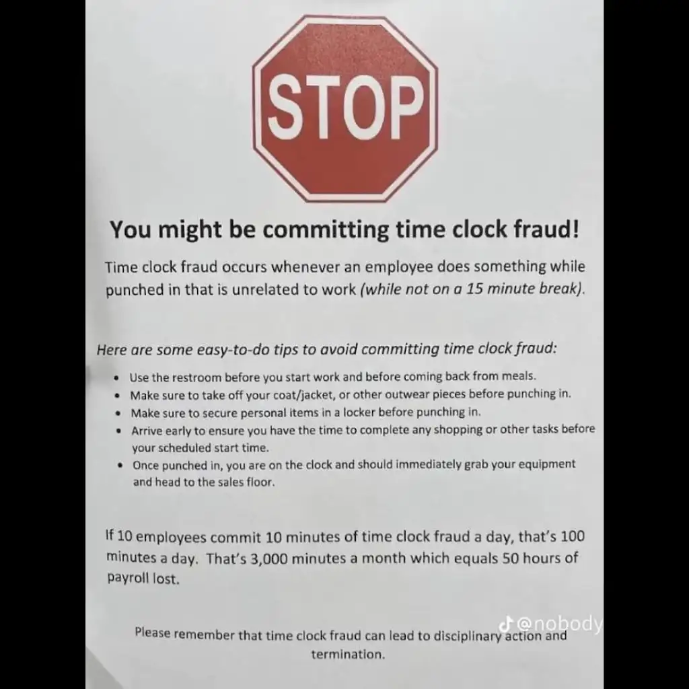

Tecnologia e Classe de 18/04/24
Lula no Bluesky
https://bsky.app/profile/tecnologiaeclasse.bsky.social
POLYWORK PASSANDO NA SUA TIMELINE

Demissão Peaky Blinder
As tretas de licensiamento: Redis, Terraform e outros
HAhaha ChatGPT
https://www.instagram.com/p/C4isj-SuTWk/
Tarcísio e o ChatGPT
O grande bosteamento
PL dos Apps
Resumo da PL
- Apenas para trabalhadores de aplicativo de carro (e.g. Uber e não Ifood)
- Parece haver uma vontade de mover para outros aplicativos, mas ainda não estamos lá
- Tempo de trabalho máximo de 12 horas (em corrida no app e quem computa É O APP)
- Cria uma nova classe de 'trabalhador de aplicativo' que é pretensamente autônoma, mas vai organizar uma representação sindical
- Empresa não pode exigir exclusividade do motorista e nem exigir horários ou jornada
- Poderá ocorrer a exclusão unilateral do cadastro do trabalhador por: fraudes, abusos, mau uso da plataforma
- Prevê um valor mínimo de remuneração por tempo de trabalho baseado no salário mínimo e um valor de 'custos'
- Não garante pro trabalhador intervalo, férias, 13º e FGTS
- Garante uma questão previdênciária similar a dos trabalhadores autônomos
Problemáticas possíveis
- 0-hour contract / contrato de 0 horas
- Regras do App substituem leis de trabalho
- O tempo máximo de trabalho É POR APP
- O trabalhador de aplicativo é um autônomo mesmo?
- Empresas de apps cercaram o mercado e o plano é expandir isso para todas as áreas

Plataformas de 'bicos' no Brasil
- Uber, Ifood e derivados
- Fivver https://www.fiverr.com/
- GetNinjas https://www.getninjas.com.br/home-busca-v2
- FGMED https://fgmed.org/blog/uber-da-medicina-mais-conexao-e-saude/
- https://portal.cfm.org.br/noticias/cfm-regulamenta-uber-da-medicina/